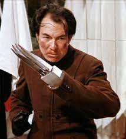

Superhero’s arch nemesis is The Blue Han.Blue Han is the main antagonist from the 1973 Bruce Lee martial arts action film Enter the Dragon. Han is a heroin drug lord who runs his heroin cooking business from a secluded island. He also lost a hand, though how he lost it is never explained. He keeps the bones of the severed hand on display in a museum of torture and weapons. In place of the missing hand he has a variety of weapon hands to use like an iron hand. His Superpower is Martial arts with fake hand weapons leadership
